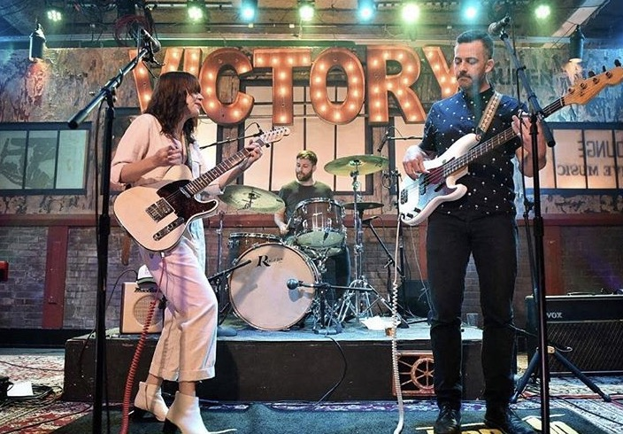
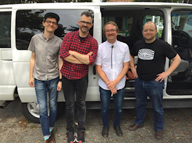

.jpg)
Hello there. My name is Steve. I grew up in a household full of music and it has played a significant role in my life since the first time I picked up an instrument. My parents were both music teachers in my small home town. It was such a small school district that I had one of the two of them as a teacher every year from the time I was in first grade until I graduated from high school.

I started off playing brass instruments and spent much of my time learning the trumpet, trombone, tuba and euphonium. In high school, my dad handed me an electric bass and asked me to join the jazz band. Shortly after, I got my first upright bass. Throughout high school and college, I participated in numberous ensembles, performing classical music on the euphonium while playing jazz on the bass. I also sang in several choral groups.
My career has taken various turns throughout the years. I spent 11 years working for a large telecommunications company. I also played music professionally, worked in public schools as a behavior interventionist, and mostly recently ran operations for a small boutique event company.
